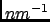

Next: Dynamic Incoherent Structure Factor
Up: Dynamic Incoherent Structure Factor
Previous: Parameters
Contents
The results of a DISFAR analysis are stored in a NetCDF file whose main variables are namely:
- octan: an array storing the codes for space octan. For example, X+Y+Z+ for the space octan corresponding to positive
X, Y and Z,
- qvectors_statistics: array storing the number of q-vectors generated per space octan,
- q: the q-shells radii in ,
- time: the times in ps at which the intermediate coherent scattering function is evaluated,
- Fqt: the total intermediate coherent scattering function,
- frequency: the frequencies in THz at which the coherent structure factor is evaluated,
- Fqt_memory_function: the corresponding intermediate coherent scattering autoregressive memory function,
- Sqw: the total dynamic coherent structure factor,
- n: the index for the autoregressive coefficients
 ,
,
- ar_coefficients_real: the real part of the autoregressive coefficients ,
- ar_coefficients_imag: the imaginary part of the autoregressive coefficients .
pellegrini eric
2009-10-06